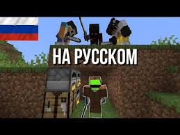

(ютубер)

Клэй, более известный как Dream — американский ютубер, ставший известным благодаря игре Minecraft и
спидранам. Начал свою карьеру на YouTube в 2014 году и приобрел значительную популярность в 2019 и
2020
годах, делая видео по игре Minecraft, и хорошо известен своей серией видео Minecraft Manhunt. По
состоянию на октябрь 2022, семейство его каналов в совокупности достигли более 40 миллионов
подписчиков
и более 3.3 миллиардов просмотров. YouTube назвал Dream лидером 2020 года. В конце 2020 года, Клэй
был
обвинен в использовании читов после расследования, проведенного сайтом Speedrun.com, где он и
выкладывал
свой результат по спидрану Minecraft.
Клэй (или Dream) создал свой канал на YouTube 8 февраля 2014 года.[2]
Пик популярности его канала пришел на 2020 год, при пандемии коронавируса.
В видео от 2020 года Клэй с другим ютубером, GeorgeNotFound, сделали возможность электрическому
ошейнику
ударять их, когда они получали урон в игре Minecraft. Создано это было с помощью плат Arduino.[3]
В декабре 2020 года вместо своей ежегодной серии YouTube Rewind, видеохостинг опубликовал список
своих
самых популярных видео и авторов. В рейтинге США YouTube поставил видео Клэя «Minecraft Speedrunner
VS 3
Hunters GRAND FINALE» на седьмое место в «Top Trending Video», и поставил канал Dream на второе
место
«Top Creator» и на первое место «Breakout Creator»[4]. Стримы Клэя на YouTube в ноябре 2020 года с
пиковым количеством зрителей около 700 тыс., человек заняла 6-е место среди самых просматриваемых
игровых стримов за все время по состоянию на январь 2021 года[5]. В статье Polygon от декабря 2020
года
говорилось, что «2020 год был потрясающим годом для Dream», и он был назван «крупнейшим игровым
каналом
YouTube на данный момент»
Dream SMP

Сервер Dream SMP — это частный Minecraft-сервер, принадлежащий Клэю, запущенный 25 апреля 2020 года.
На нём
играет он сам (Dream, DreamXD), а также другие популярные Minecraft-летсплейщики; среди них Джордж
Дэвидсон
(GeorgeNotFound), Томас Саймонс (TommyInnit), Николас (Sapnap), Дэрилл Новшош (BadBoyHalo), Тоби
Смит
(Tubbo), Флорис (ItsFundy), Вилл Голд (WilburSoot) и др. Сервер разделен на фракции и включает в
себя
тяжелую ролевую игру[11], при этом основные события заранее слабо написаны, большинство других
элементов —
импровизация, исполняемая вживую на YouTube и Twitch. Сесилия Д’Анастасио из Wired, описал Dream SMP
как
форму живого театра и как «Макиавеллизм политической драмы», с более чем 1 млн зрителей на прямых
трансляциях участников сервера в январе 2021 года[12].
Соревнования Minecraft
В течение 2020 года Клэй был участником Minecraft Championship, ежемесячного соревнования Minecraft,
организованного Noxcrew. В 2020 году, он занял первое место на 8-м и 11-м Minecraft
Championships.[13] В
сентябре 2020 года во время 10-го чемпионата Minecraft он играл на благотворительность, собрав около
3400
долларов США.[14]
Minecraft спидраннинг
В марте 2020 года Клэй разместил свой первый официальный спидран Minecraft на своем канале YouTube.
На тот
момент это был мировой рекорд на версии 1.9 на Speedrun.com[15]. Через 6 дней после загрузки своего
первого
спидрана, его товарищ по спидрану IlluminaHD побил свой рекорд, что заставило Клэя снова начать
спидраннинг
Minecraft. 24 марта Клэй установил мировой рекорд[16], который снова был побит Illumina через 17
дней[17].
10 июня[18] он загрузил свой последний спидран и мировой рекорд на версии 1.9 на сегодняшний день,
который
оставался мировым рекордом в течение 67 дней. В настоящее время, Клэй занимает 12 место в категории
на
Speedrun.com
YouTube
В марте 2020 года Клэй разместил свой первый официальный спидран Minecraft на своем канале YouTube.
На тот момент это был мировой рекорд на версии 1.9 на Speedrun.com[15]. Через 6 дней после загрузки
своего первого спидрана, его товарищ по спидрану IlluminaHD побил свой рекорд, что заставило Клэя
снова начать спидраннинг Minecraft. 24 марта Клэй установил мировой рекорд[16], который снова был
побит Illumina через 17 дней[17]. 10 июня[18] он загрузил свой последний спидран и мировой рекорд на
версии 1.9 на сегодняшний день, который оставался мировым рекордом в течение 67 дней. В настоящее
время, Клэй занимает 12 место в категории на Speedrun.com.
Соревнования Minecraft

В течение 2020 года Клэй был участником Minecraft Championship, ежемесячного соревнования Minecraft,
организованного Noxcrew. В 2020 году, он занял первое место на 8-м и 11-м Minecraft
Championships.[13] В
сентябре 2020 года во время 10-го чемпионата Minecraft он играл на благотворительность, собрав около
3400 долларов США.[14]
Обвинения в использовании читов

В начале октября 2020 года, Клэй провел прямую трансляцию спидрана Minecraft на версии 1.16 и
отправил
свой рекорд на Speedrun.com. Ему присвоено 5 место[6].
11 декабря 2020 года, после двухмесячного расследования, команда проверки Minecraft, Speedrun.com
удалила его спидран с таблицы. Команда опубликовала 14-минутное видео на YouTube и отчет,
анализирующий
шесть стримов со спидранами Клэя, примерно со времени записи; они пришли к выводу, что игра была
модифицирована, чтобы повысить вероятность получения Жемчугов Края во время торговли с Пиглинами,
необходимых для завершения игры. В отчете говорится, что, нормальный шанс так, как он получить их
составляет 1/7.5 трлн. Клэй отверг обвинения в видео на YouTube и ответил заказным отчетом,
написанным статистиком, который, как он утверждал, был астрофизиком[9].
Dot Esports заявила, что отчет не оправдывает его, и «в большей степени» предполагает, что везение
исключено. Команда модераторов поддержала их решение. В своем твите Клэй указал, что примет их
решение,
не признав вины.
30 мая 2021 года он опубликовал сообщение, в котором признался в том, что его версия игры
действительно
имела модификацию, менявшую вероятность получения определённых игровых предметов. При этом он
заявил,
что не знал о некоем её обновлении автором модификации, из-за которого Клэй якобы не обратил на неё
внимание перед началом спидрана. Им также было удалено видео с ответом на обвинения.
читать далее...